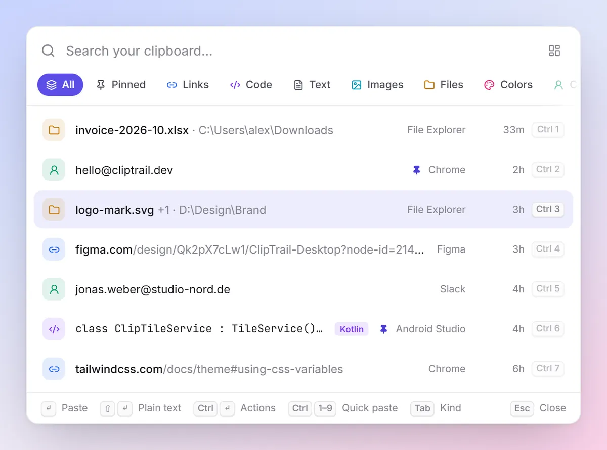
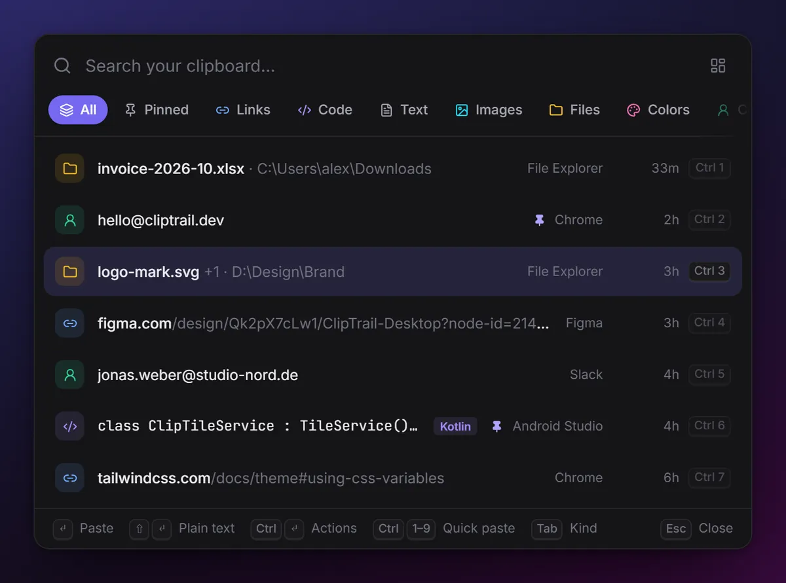
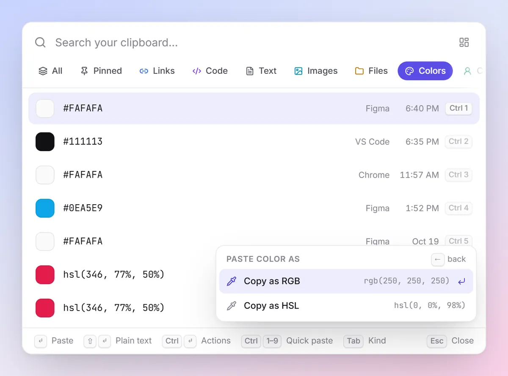
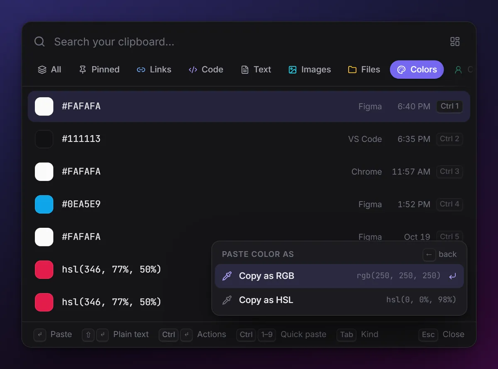

Your clipboard,
everywhere, forever.
ClipTrail remembers everything you copy, knows what each thing is, and puts it one keystroke away. Pair your devices and your history follows you, end-to-end encrypted. Open source, no account, no tracking.
Windows · Linux · macOS (experimental) · Free and open source




Copy like you always do
ClipTrail saves every copy in the background and works out what it is: a link, code, a colour, an image.
Summon the picker
Press the hotkey in any app and type a few letters. Search runs over years of history as you type.
CtrlShiftSpacePress Enter
The clip goes straight into the app you were in. Shift Enter pastes it as plain text.
EnterEvery copy, kept, sorted and one keystroke away.
Built-in clipboards forget after a few dozen items or a restart. Sync tools only move your last copy. ClipTrail keeps the whole trail and makes it easy to find.
Instant picker, paste where you were
A hotkey opens a search box over whatever you're doing. Enter pastes into the previous app; Ctrl 1–9 quick-pastes the top nine; Tab flips through kinds.
How the picker works →Smart actions for every kind
Clean tracking junk from links, copy a colour as RGB or HSL, prettify or minify JSON, wrap code in a Markdown block, dedent, join lines, change case. Each action shows a live preview.
All smart actions →

Unlimited history
Text, links, code, images and files, kept until you delete them, or for as long as you choose. Nothing lost after a restart.
- Keep forever, 1 year, 90 or 30 days
- Pinned clips are never cleaned up
- Repeat copies bump, never duplicate
Knows what you copied
Every clip is recognised on your device the moment you copy it, with no tagging and no cloud. Code gets its language (Rust, Python, TypeScript, SQL, shell and 15 more), links get their site, secrets get hidden.
Travel back in time
A timeline grouped by day and a 16-week calendar heatmap. Click a day to jump straight to "that thing I copied last Tuesday", or narrow to today, 7 or 30 days, a kind or an app.
Lives in your tray
Recent clips, pause capture, start at login, all one click away.
Safe by default
Password managers are ignored. One-time codes, API keys, private keys and card numbers are masked, kept out of search and sync, and deleted after an hour.
Light and fast
A Rust core on SQLite with trigram full-text search. Classifying a clip takes well under a millisecond. The app uses your system's web view, not a bundled browser.
Pair with a QR code
Scan once and your devices share one history over your Wi-Fi, end-to-end encrypted. No account, no cloud.
Cross-device sync →Scriptable — and agent-ready
The clipd CLI does everything the app does — capture, search, pin, sync — so scripts and AI agents can reach your history too. An MCP server that plugs ClipTrail straight into agent tooling is in development.
Any device to any device.
Each platform gets its own app on the same Rust core. Every app is fully useful on its own; pair another device when you have one and what you copy on one shows up in the history of the others.
Copy on Windows, paste on your phone
An address from an email on your laptop is in your phone's ClipTrail a moment later. Tap it to copy, then paste anywhere.
Android app arrives with v0.1An image from your phone on your Mac
Screenshots and photos sync as full images (thumbnails first), so they're there when you sit down at your computer.
Android v0.1 · macOS experimentalCode from Linux, pasted on Windows
That command from your Linux box is one hotkey away on your Windows laptop, still tagged with its language.
Works today on your local networkOne scan to pair. Encrypted before it leaves.
- QR pairing with a check code. Your computer shows a one-time code valid for 10 minutes; both devices then show the same 4-digit check code.
- End-to-end encrypted. Every clip is sealed with XChaCha20-Poly1305 on the device that copied it. Keys live in the OS keychain.
- On your network, no cloud. A desktop acts as the hub on your Wi-Fi. No account, no server of ours, nothing leaves your home or office.
- Secrets stay put. Sensitive clips are never synced. Synced clips land in history, never silently on your clipboard.
- Same network for now. Both devices need to be on the same Wi-Fi or LAN while they sync; changes made while apart catch up when they meet again.


Platform support
| Platform | Status | Capture | Paste-back | Sync |
|---|---|---|---|---|
| Windows 10 / 11 | Supported | Automatic | Yes | Hub or client |
| Linux | Beta | X11; Wayland with data-control (KDE, Sway, Hyprland). GNOME is limited. | X11 only | Hub or client |
| Android | Coming in v0.1 | Automatic via accessibility, plus tile and share menu | Tap to copy | Client |
| macOS | Experimental | Automatic (text, rich text, images, file URLs) | Yes — needs Accessibility permission | Hub or client (untested) |
| iOS | Later | Share extension and shortcuts are on the roadmap. | ||
History tools don't sync. Sync tools don't remember.
ClipTrail is built to do both, on the mix of devices people actually own. Here's an honest comparison, including what isn't there yet.
| Feature | Built-in history Win+V and similar | History apps one device | Clipboard sync phone links, bridges | ClipTrail |
|---|---|---|---|---|
| Keeps everything, searchable | — | ✓ | — | ✓ |
| Sorted by type automatically | — | some | — | ✓ |
| Timeline and calendar heatmap | — | rare | — | ✓ |
| Smart paste actions | — | some | — | ✓ |
| Laptop ↔ phone | with an account | — | ✓ | Android in v0.1 |
| Windows + Linux + Android | — | some | some | ✓ (Android in v0.1) |
| End-to-end encrypted, open source | — | some | some | ✓ |
| No account needed | ✓ | ✓ | some | ✓ |
Your clipboard is yours.
A clipboard manager sees passwords, private messages and keys. ClipTrail is designed so that nobody else does.
- Local-first. Your history is a folder on your device. Every app works fully offline and alone.
- No telemetry, no analytics, no account. Nothing phones home. Read every line on GitHub.
- Encrypted sync. Only ciphertext crosses the network, and only to devices you paired.
- Password managers excluded by default, plus any app you add.
- On the roadmap: encrypting the on-device database at rest. Today it's protected by your OS account, like your browser history.
Questions, answered.
Is ClipTrail free?
Yes. It's open source under MIT or Apache-2.0, with no account and no paid tier.
Does my clipboard leave my computer?
Only if you pair another device, and then only as ciphertext to that device over your local network. There is no ClipTrail server and no telemetry.
When is the Android app coming?
With v0.1.0, the first alpha. Capture on Android works through an accessibility service plus a Quick Settings tile and the share menu; it will be a sideloaded APK at first. See Android setup.
Do I need two devices?
No. Every app is fully useful on one device: history, search, the picker and smart actions all work offline. Pairing only adds devices when you have them.
Is it safe to copy passwords?
Copies from password managers are ignored by default. Anything that looks like a one-time code, API key, private key or card number is masked, never searchable, never synced, and deleted after an hour (you can change that).
Start keeping your trail.
Free, open source, and private by design. Watch the repo to hear the moment v0.1 ships.